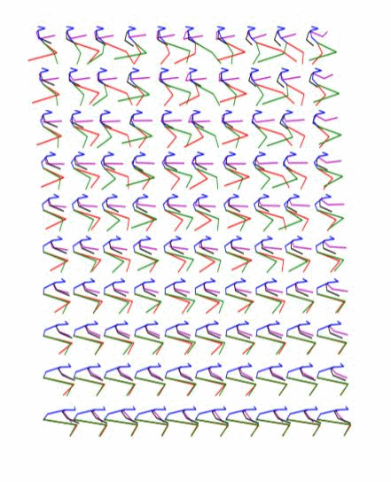

Human Motion Prediction via Pattern Completion in Latent Representation Space
Authors: Yi Tian Xu, Yaqiao Li, David Meger
Abstract: Inspired by ideas in cognitive science, we propose a novel and general approach to solve human motion understanding via pattern completion on a learned latent representation space. The same model outperforms current state-of-the-art methods in human motion prediction across a number of tasks, with no customization. To construct a latent representation for time-series of various lengths, we propose a new and generic autoencoder based on sequence-to-sequence learning. While traditional inference strategies find a correlation between an input and an output, we use pattern completion, which views the input as a partial pattern and to predict the best corresponding complete pattern. Our results demonstrate that this approach has advantages when combined with our autoencoder in solving human motion prediction, motion generation and action classification.
Paper: Yi Tian Xu, Yaqiao Li, David Meger, Human motion prediction via pattern completion in latent representation space, CRV 2019 (16th conference on Computer and Robot Vision). Accepted.
[ArXiv]
Supplimentary results for long-term motion prediction and motion generation
From left to right: ground truth, baseline [1] and our method.
The input is shown at the beginning when the skeleton is all black.
Our predicted motion does not collapse to a common pose, but it is slightly discontinuous in the arms.
From left to right: our method with no noise, adding 50% noise and adding 100% noise.
The input is shown at the beginning when the skeleton is all black. Adding too much noise results in unrealistic motions.
From left to right: our method with no noise, adding 50% noise and adding 100% noise.
The input is shown at the beginning when the skeleton is all black.
(This is not included in the original submission.)
|  |
|

We obtain a walking to sitting motion.
On the right, top row and bottom rows are the input,
the rows in between are interpolated from the latent space.
On the left, different ways of generating a walking to sitting motion.
| milliseconds | Short-term | Long-term | Mean STD | STD STD | ||||||||||
|---|---|---|---|---|---|---|---|---|---|---|---|---|---|---|
| 80 | 160 | 320 | 400 | 480 | 560 | 640 | 720 | 800 | 880 | 960 | 1000 | |||
| Zero-velocity | 0.40 | 0.71 | 1.07 | 1.20 | 1.32 | 1.42 | 1.50 | 1.57 | 1.66 | 1.75 | 1.82 | 1.85 | - | - |
| Tang et al. [2] | 0.39 | 0.68 | 1.01 | 1.13 | 1.25 | 1.34 | 1.42 | 1.49 | 1.59 | 1.69 | 1.77 | 1.80 | - | - |
| Ours-ADD-30 | 0.50 | 0.74 | 1.09 | 1.21 | - | - | - | - | - | - | - | - | 0.003 | 0.006 |
| Ours-FN-30 | 0.35 | 0.59 | 0.92 | 1.06 | - | - | - | - | - | - | - | - | ||
| Ours-ADD-20 | 0.61 | 0.79 | 1.11 | 1.22 | 1.30 | 1.40 | 1.50 | 1.56 | 1.61 | - | - | - | 0.010 | 0.011 |
| Ours-FN-20 | 0.37 | 0.60 | 0.98 | 1.10 | 1.17 | 1.26 | 1.35 | 1.40 | 1.45 | - | - | - | ||
| Ours-ADD-10 | 0.56 | 0.78 | 1.03 | 1.14 | 1.26 | 1.37 | 1.46 | 1.53 | 1.62 | 1.74 | 1.79 | 1.81 | 0.010 | 0.012 |
| Ours-FN-10 | 0.35 | 0.60 | 0.93 | 1.06 | 1.18 | 1.25 | 1.31 | 1.38 | 1.47 | 1.55 | 1.62 | 1.65 | ||
| milliseconds | Short-term | Long-term | Mean STD | STD STD | ||||||||||
|---|---|---|---|---|---|---|---|---|---|---|---|---|---|---|
| 80 | 160 | 320 | 400 | 480 | 560 | 640 | 720 | 800 | 880 | 960 | 1000 | |||
| Zero-velocity | 0.40 | 0.71 | 1.07 | 1.20 | 1.32 | 1.42 | 1.50 | 1.57 | 1.66 | 1.75 | 1.82 | 1.85 | - | - |
| Martinez et al. [1] | 0.36 | 0.67 | 1.02 | 1.15 | 1.31 | 1.42 | 1.51 | 1.58 | 1.67 | 1.78 | 1.85 | 1.92 | - | - |
| Ours-ADD-50 | 0.38 | 0.64 | 0.99 | 1.12 | - | - | - | - | - | - | - | - | 0.018 | 0.007 |
| Ours-FN-50 | 0.41 | 0.62 | 0.92 | 1.03 | - | - | - | - | - | - | - | - | ||
| Ours-ADD-40 | 0.63 | 0.81 | 1.08 | 1.18 | 1.38 | 1.48 | 1.55 | 1.61 | 1.70 | - | - | - | 0.034 | 0.016 |
| Ours-FN-40 | 0.44 | 0.64 | 0.92 | 1.04 | 1.18 | 1.23 | 1.28 | 1.34 | 1.43 | - | - | - | ||
| Ours-ADD-30 | 0.73 | 0.90 | 1.11 | 1.21 | 1.26 | 1.34 | 1.42 | 1.48 | 1.57 | 1.83 | 1.92 | 1.95 | 0.041 | 0.024 |
| Ours-FN-30 | 0.44 | 0.65 | 0.93 | 1.04 | 1.17 | 1.23 | 1.27 | 1.34 | 1.42 | 1.53 | 1.60 | 1.62 | ||
| Ours-ADD-10 | 0.71 | 0.87 | 1.08 | 1.17 | 1.22 | 1.29 | 1.37 | 1.43 | 1.51 | 1.61 | 1.68 | 1.70 | 0.040 | 0.041 |
| Ours-FN-10 | 0.42 | 0.63 | 0.91 | 1.03 | 1.17 | 1.23 | 1.29 | 1.34 | 1.42 | 1.54 | 1.59 | 1.62 | ||
[1] J. Martinez, M. J. Black, and J. Romero, "On human motion prediction using recurrent neural networks," in 2017 IEEE Conference on Computer Vision and Pattern Recognition (CVPR). IEEE, 2017, pp. 4674–4683.
[2] Y. Tang, L. Ma, W. Liu, and W. Zheng, "Long-term human motion prediction by modeling motion context and enhancing motion dynamic," arXiv preprint arXiv:1805.02513, 2018